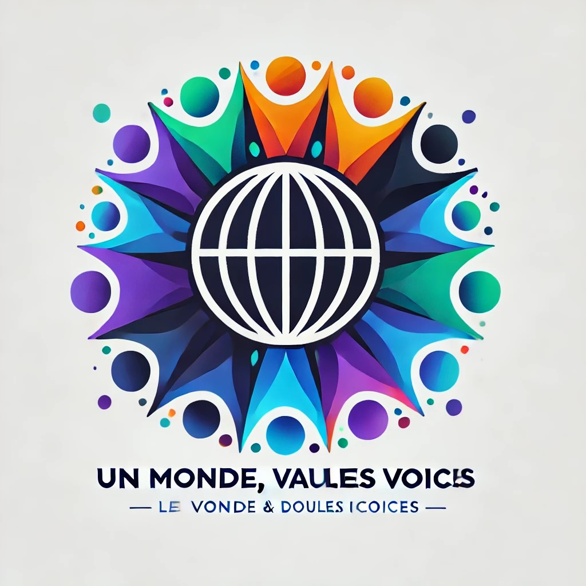

<html lang="fr"></html>
<head>
    <meta charset="UTF-8">
    <meta name="viewport" content="width=device-width, initial-scale=1.0">
    <meta name="description" content="Programmation des activités du Festival de la Diversité et de l'Inclusion">
    <title>À propos | Festival de la Diversité et de l'Inclusion</title>
    <link type="text/css" rel="stylesheet" href="Visual.css"/>
    <script src="https://kit.fontawesome.com/91e5543b76.js" crossorigin="anonymous"></script>
</head>

<body>

    <!-- En-tête -->
    <header>
        
    </header>

        <div class = "festival">
            <h2>Un Monde, Plusieurs Voix <i class="fa-solid fa-globe"></i></h2>
        </div>
            <nav>
                <a href="index.html">Acceuil</a><i class="fa-solid fa-house-chimney"></i>
                <a href="UnMondePlusieursVoix_Activités.html">Activités</a><i class="fa-solid fa-calendar-days"></i>
                <a href="UnMondePlusieursVoix_Inscription.html">Inscription</a><i class="fa-solid fa-pen-to-square"></i>
                <a href="UnMondePlusieursVoix_Intervenant.html">Intervenants</a><i class="fa-solid fa-microphone-lines"></i>
                <a href="UnMondePlusieursVoix_Sponsors.html">Partenaires</a><i class="fa-solid fa-handshake"></i>
                <a href="UnMondePlusieursVoix_aPropos.html">À propos</a><i class="fa-solid fa-book-atlas"></i>
                <a href="UnMondePlusieursVoix_contact.html">Contact</a><i class="fa-solid fa-at"></i>
            </nav>
    <!-- Contenu principal -->
    <div class="container">
        <h2>À Propos <i class="fa-solid fa-book-atlas"></i></h2>        
            <section class="title" id="title">
                <div class="subtitle">
                    <h3><b>Description</b></h3>
                    <p>Cet événement est une <strong>célébration</strong> immersive de la diversité culturelle, sociale et professionnelle.
                    Le "Festival : Un Monde, Plusieurs Voix" vise à sensibiliser le grand public et les entreprises à l’importance
                    d’inclure toutes les voix dans les processus sociaux, économiques et culturels.
                    Il rassemble des individus de tous horizons pour discuter, échanger et apprendre autour des thématiques de la diversité,
                    de l'inclusion et de l'équité.</p>
                </div>
                <div class="subtitle">
                    <h3><b>Objectif Principal</b></h3>
                    <p>•	<strong>Promouvoir</strong> la compréhension mutuelle</p>
                    <p>•	<strong>Célébrer</strong> la diversité sous toutes ses formes (culturelle, ethnique, religieuse, de genre, d'orientation sexuelle, de capacités physiques, etc.)</p>
                    <p>•	<strong>Encourager</strong> des pratiques inclusives dans la société et le monde du travail</p>
                        
                </div>
                <div class="subtitle">
                   <h3><b>Public visé</b></h3>
                    <p>L’événement est ouvert à tous : entreprises, associations, éducateurs, décideurs politiques, étudiants, professionnels de tous secteurs,
                    et toute personne intéressée par les thématiques de la diversité et de l’inclusion.</p>

                </div>
                <div class="subtitle">
                    <h3><b>Impact attendu</b></h3>
                    <p>•	<strong>Sensibiliser</strong> un large public à l'importance de la diversité et de l'inclusion dans tous les aspects de la vie sociale et professionnelle.</p>
                    <p>•	<strong>Fournir aux entreprises</strong> des outils pratiques pour renforcer l'inclusion au sein de leurs équipes.</p>
                    <p>•	<strong>Favoriser le dialogue</strong> interculturel et intercommunautaire, en réduisant les préjugés et en encourageant une société plus équitable et inclusive.</p>
                </div>
            </section>
    </div>
 <!-- Pied de page -->
 <footer>
    <p>&copy; 2024 Festival Un Monde, Plusieurs Voix <i class="fa-solid fa-globe"></i> | Tous droits réservés</p>
</footer>

</body>
</html>